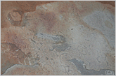
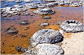
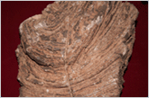
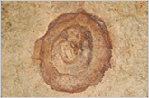

생성원리

대표적인 화석
- 
진핵생물 (미국)
- 
스트로마톨라이트 (호주)
- 
스트로마톨라이트 (모로코)
- 
에디아카라 (우크라이나)
IGTS 분류표
| 시대 (Supereon) |
누대(Eon) | 대(Era) | 기 (period, gene) |
주요 사건 | 시작시기 (Ma전) |
|---|---|---|---|---|---|
| 선캄브리아 시대 |
하데스누대 | 지구가 생성되고 가장 오래된 광물(지르콘) 발견 | 4570 | ||
| 시생누대 | 시시생대 | 단세포생물(박테리아)과 미화석 발견 | 3800 | ||
| 고시생대 | 광합성에 의해 산소를 생산하는 박테리아 출현 | 3600 | |||
| 중시생대 | 스트로마톨라이트와 대형화석 첫 출현 | 3200 | |||
| 신시생대 | 맨틀대류에 의해 현재의 순상지로 안정화 | 2800 | |||
| 원생누대 | 고원생대 | 시대리아기 | 산소의 양이 급속히 증가(철 산화물 층서가 그 증거) | 2500 | |
| 리아시아기 | 식물의 우림 형성, 휴론기 빙하작용 | 2300 | |||
| 오로시리아기 | 대기가 산소화 되고 대규모의 조산운동과 소행성충돌 | 2050 | |||
| 스타테리아기 | 핵을 가진 복잡한 구조의 원생생물 출현, 초대륙 콜럼비아 존재 | 1800 | |||
| 중원생대 | 칼리미아기 | 순상지 위의 퇴적 및 화산광상인 platform cove의 확장 | 1600 | ||
| 엑타시아기 | 광합성에 의해 산소를 만드는 녹색 조류(algae) 출현 | 1400 | |||
| 스테니아기 | 조산운동에 의해 초대륙 로디니아 생성 | 1200 | |||
| 신원생대 | 토니아기 | 세포막이 있는 진핵생물의 화석발견, 최초의 방사상 와편모류 출현 | 1000 | ||
| 크라이오제니아기 | 'snowball earth' 의 가설에 의해 지표가 얼어붙고 눈으로 덮인 시기 추정(빙하퇴적물의 즐거로), 화석이 드물고 로디니아가 분열되기 시작 | 850 | |||
| 에디아카라기 | 생물체의 빠른 증가, 복잡한 다세포를 지닌 에디아카라 동물군 출현, trichophycus와 같은 연충화석 발견 | 630 |